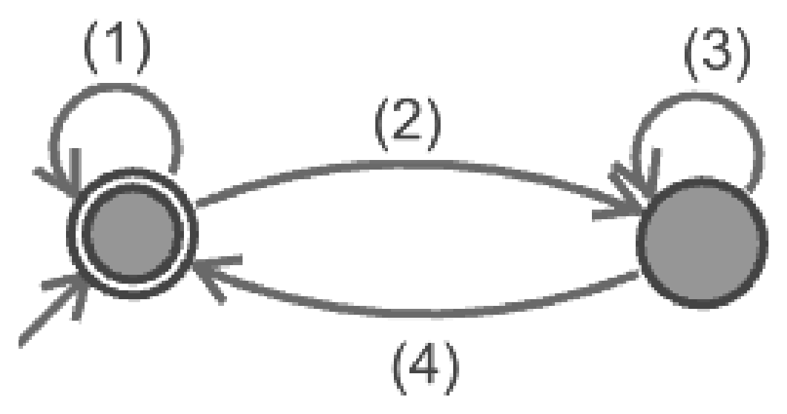
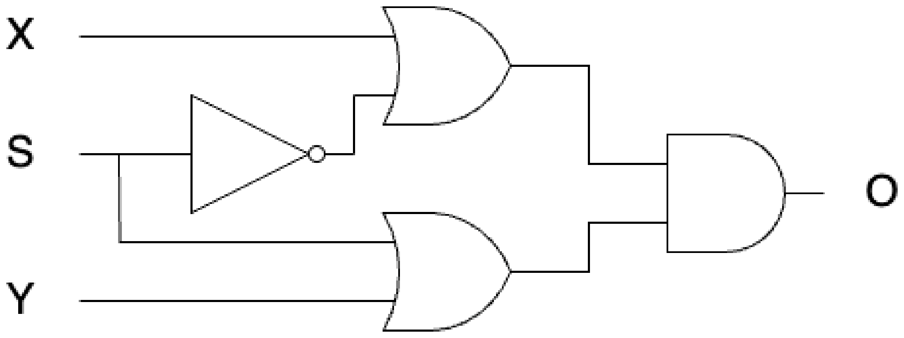

田中哲郎クラス｜7月26日 3限｜大問2
3進数（0を a、1を b、2を c で表現）で下位の桁から与えていき（最上位に0が来る入力も扱う）、2の倍数だと受理し（終了状態になり）、2の倍数でない時は拒否する（非終了状態になる）オートマトンを作成した。下図左のチェック表の(a)〜(e)に「受理」または「拒否」のどちらが入るかを答えよ。また、下図右の(1)〜(4)の状態遷移の規則の文字の部分に集合{a,b,c}の部分集合を入れると完成するが、(1)〜(4)のそれぞれに入れる部分集合を答えよ。
チェック表（下図左。上7行は既知の例、(a)〜(e)が解答対象）：
| 入力 | 停止時の状態 | 10進表現 |
|---|---|---|
| a | 受理 | 0 |
| b | 拒否 | 1 |
| c | 受理 | 2 |
| ac | 受理 | 6 |
| ab | 拒否 | 3 |
| bc | 拒否 | 7 |
| cc | 受理 | 8 |
| bacb | (a) | |
| caab | (b) | |
| bcac | (c) | |
| bacab | (d) | |
| aaabb | (e) |

3進数は3が奇数なので、$3^k \bmod 2 = 1$（すべての桁の重みが奇数）。したがって値全体の偶奇は「桁の数字（0,1,2）の合計の偶奇」と一致し、さらに偶数の桁（0=a, 2=c）は合計の偶奇に影響しないので、結局「bの個数が偶数か奇数か」だけで2の倍数かどうかが決まる（a,cは無視してよい）。
状態遷移：a,cを読んでも偶奇は変わらない（自己ループ）。bを読むと偶奇が反転する。
チェック表（bの個数の偶奇で判定）：
2進法（0を a、1を b で表現）を下位の桁から与えていき、3の倍数だと受理するオートマトンをなるべく少ない状態数で実現し、(A)の上図右と同じような図（状態遷移図）を書きなさい。
普通の余りだけを記録すると、次の桁の重み$2^n\bmod 3$が$1,2,1,2,\ldots$と交互に変わる。しかし、余りを次のように正規化すれば、その位相を別の状態として持たずに済む。
$n$文字読んだ時点で表される数を$N_n$とし、状態$q$を
で定める。法3では$2^{-1}\equiv2\pmod3$なので、この値は常に定義できる。$q_0,q_1,q_2$をそれぞれ$q\equiv0,1,2\pmod3$の状態とする。初期状態は$q_0$であり、$2^{-n}$は法3で0ではないため、$N_n$が3の倍数であることと$q=0$は同値である。したがって受理状態も$q_0$である。
次に読む桁を$d\in\{0,1\}$とすると$N_{n+1}=N_n+d2^n$だから、
$a=0,\ b=1$を代入すると、遷移は次の表になる。
| 現在の状態 | a（0） | b（1） |
|---|---|---|
| $q_0$（開始・受理） | $q_0$ | $q_2$ |
| $q_1$ | $q_2$ | $q_1$ |
| $q_2$ | $q_1$ | $q_0$ |
検算：3は下位桁から「bb」と読む。$q_0\xrightarrow{b}q_2\xrightarrow{b}q_0$となり、受理される。
また、$q_0$は受理状態なので他の2状態と区別できる。$q_1$と$q_2$も、文字bを1つ読むと$q_1\xrightarrow{b}q_1$（非受理）、$q_2\xrightarrow{b}q_0$（受理）となるため区別でき、統合できない。よって最小状態数は3である。
最上位桁から読む場合、$b$進数の値は「これまでの余り×b＋新しい桁」で更新でき、状態は「余りmod $m$」だけで済む。下位桁から読む場合、そのままの余りでは次の桁の重み$b^n\bmod m$の位相も必要になるが、$b$が法$m$で逆元を持つときは、本問のように$N_nb^{-n}$で正規化すると位相を余りへ吸収できる。逆元を持たない場合にはこの方法は使えず、重みの位相を含む別の状態設計が必要になる。
下の図はある論理関数$O=f(X,Y,S)$をMIL記法で書いたものである。この回路は「XとNOT(S)」「SとY」をそれぞれORでまとめ、その2つの出力をANDで結合する構成——主乗法標準形（和積標準形）を直接ゲートに落とし込んだ形になっている。

$O=f(X,Y,S)$の真理値表を書け。
回路式 $O=(X+\bar S)(Y+S)$ を$S=0,1$で場合分けすると分かりやすい：$S=0$なら$O=(X+1)(Y+0)=1\cdot Y=Y$、$S=1$なら$O=(X+0)(Y+1)=X\cdot1=X$。つまり$S=0$なら$Y$を、$S=1$なら$X$を選んで出力する2:1マルチプレクサになっている。
| X | Y | S | O |
|---|---|---|---|
| 0 | 0 | 0 | 0 |
| 0 | 0 | 1 | 0 |
| 0 | 1 | 0 | 1 |
| 0 | 1 | 1 | 0 |
| 1 | 0 | 0 | 0 |
| 1 | 0 | 1 | 1 |
| 1 | 1 | 0 | 1 |
| 1 | 1 | 1 | 1 |
この関数の主加法標準形（積和標準形）を書け（回路のMIL記法は主乗法標準形＝和積標準形に対応している）。
主加法標準形は、$O=1$の各行に対応する最小項をORで結ぶ。010→$\bar X Y\bar S$、101→$X\bar YS$、110→$XY\bar S$、111→$XYS$である。前者と3項目をまとめると$Y\bar S(\bar X+X)=Y\bar S$、2項目と4項目をまとめると$XS(\bar Y+Y)=XS$となるため、回路式まで簡単化できる：
この論理関数を4個以下のNANDのみを使ってMIL記法で書け。
$O=XS+Y\bar S$ の形（積和標準形の2項）は、ド・モルガンの法則を使うとNAND-NANDネットワークとして直接実現できる：$\bar S$を1個のNAND（NAND(S,S)）で作り、$XS$と$Y\bar S$をそれぞれ1個のNANDの否定として作り（NANDの出力はすでに否定形なので、これをそのまま次段のNANDの入力にすればよい）、最後にもう1個のNANDで合成する。
ちょうど4個のNANDで実現できる。
「$S$の値によって$X$か$Y$のどちらかを選んで出力する」回路をマルチプレクサ（MUX）と呼び、$O=XS+Y\bar S$（積和形）で表される。積和標準形の論理関数は、ド・モルガンの法則により常に「NANDのNAND」というちょうど2段のネットワークに変換できる——各積項（AND）をNANDに、それらをまとめるOR段もNANDに置き換えられるため、NANDだけで（否定の否定を利用して）ANDとORの両方の役割を代替できる。これはNAND素子だけからどんな論理関数も作れる（NANDが関数的完全性を持つ）ことの具体例。